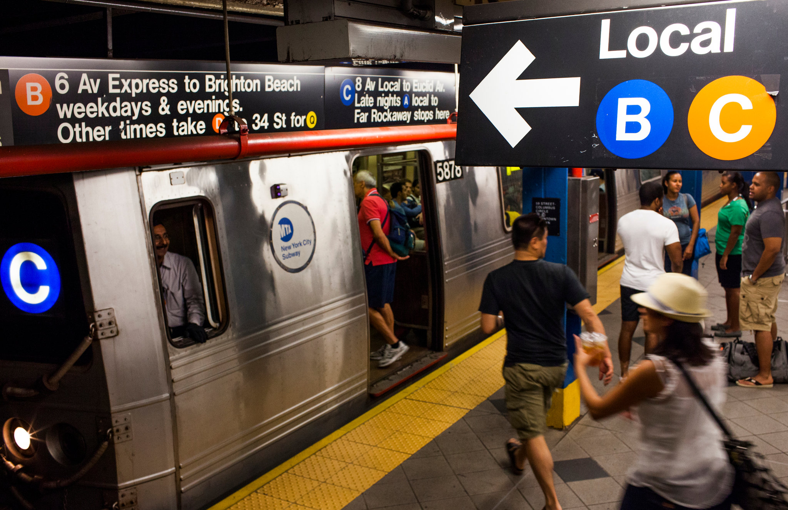

Les New-Yorkais passent beaucoup de temps dans les transports, en particulier dans le métro, très sûr et tranquille. Le réseau est très étendu et efficace puisqu'il fonctionne 24h/24. Seul petit reproche : les stations sont parfois éloignées les unes des autres, notamment dans Queen ou Brooklyn. Bon, ne pas s'attendre non plus à un métro ultramoderne.
Comment ça marche ? Avec des cartes magnétiques, MetroCard que l'on passe dans des tourniquets automatiques. Il est question que ce système soit remplacé dès 2018 par un dispositif plus moderne, à suivre. En attendant, on achète les MetroCards à l’intérieur des stations de métro, dans les distributeurs automatiques dédiés (ou au guichet).
Le tarif de base pour un trajet est de 2,75 $, quelle que soit la distance. Les enfants de moins de 1,10 m (44 inches précisément) voyagent gratuitement dans le bus et le métro (jusqu’à trois pour un adulte payant).
Voici les trois types de forfaits à charger sur une MetroCard ; ajouter 1 $ pour la carte magnétique elle-même et penser à la conserver pour ne pas la repayer inutilement si vous devez la recharger (attention, les cartes rechargeables Pay-Per-Ride et 7-Day Unlimited Ride sont différentes, faire un choix à l’achat) :
- Single Ride : 3 $ le ticket à l’unité (un poil plus cher que le trajet de base, donc). Correspondances bus-métro possibles pour le même prix, dans un délai de 2h.
- Pay-Per-Ride : ce sont des forfaits rechargeables, valables 1 an, d’une valeur allant de 5 à 80 $ environ, utilisables dans le métro et dans le bus. Plus pratiques et plus avantageuses que le ticket à l’unité. Les trajets sont débités à chaque passage de tourniquet et on peut utiliser la même carte pour quatre personnes maximum.
- 7-Day Unlimited : pass hebdomadaire qui vous permet de prendre autant de fois que vous le voulez le métro et le bus pendant 7 jours, et qui coûte 32 $. Intéressant même en faisant seulement deux trajets par jour.
Vous pouvez visionner et télécharger le plan du Métro en cliquant sur le bouton.
 A New York, il existe deux types de métro : les « Local trains » qui s’arrêtent à toutes les stations et les « Express trains », qui ne s’arrêtent qu’aux stations principales, permettant de gagner beaucoup de temps sur les longs trajets.
Sur le plan du métro de New York, c’est très facile de faire la différence : les stations indiquées par un rond blanc accueillent les deux types de trains, « Local trains » et « Express trains », tandis que les stations indiquées par un rond noir n’accueillent que les « Local trains ». Vous trouverez un plan du métro sur cette page dédiée au métro de New York.
Lorsque vous êtes sur le quai d’une station de métro qui reçoit les deux types de trains, il vous suffit de repérer les panneaux « Local » et « Express » au bas des escaliers. Au bout de quelques trajets, vous aurez vite compris ce système très pratique !
C’est l’autre info à connaître pour naviguer presque les yeux fermés : la différence entre « Uptown » et « Downtown ». Cette indication que vous trouverez dans les couloirs du métro vous indique la direction des rames : les trains qui vont « Uptown » se dirigent vers le Nord tandis que les trains qui vous « Downtown » se dirige vers la pointe Sud de Manhattan. Encore une fois, vous vous y ferez très vite !